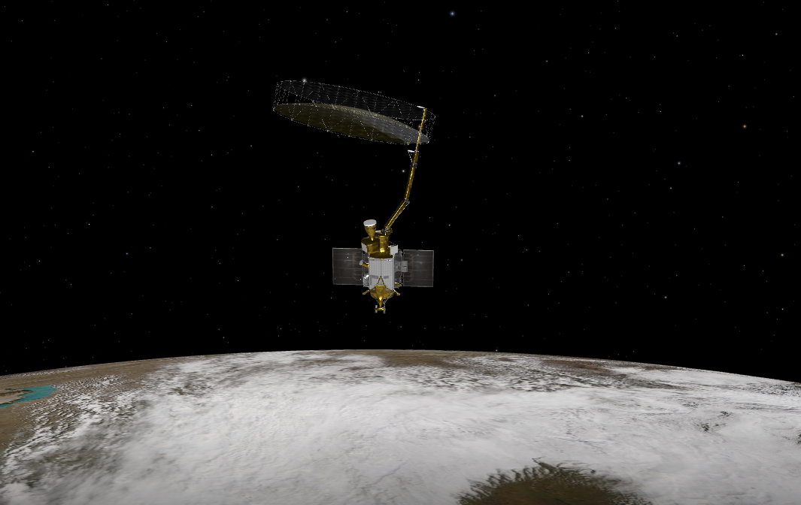

SMAP Satellite (Soil Moisture Active Passive)
🛰️ SMAP Satellite Overview
🚀 Mission Basics
- Full Name: Soil Moisture Active Passive (SMAP)
- Launched: January 31, 2015 by NASA
- Launch Vehicle: Delta II rocket from Vandenberg Air Force Base
- Orbit Type: Sun-synchronous, near-polar (~685 km altitude)
- Revisit Time: Every 2–3 days globally
🯠Mission Objectives
- Measure global soil moisture and freeze-thaw state
- Improve understanding of the water, energy, and carbon cycles
- Enhance weather and climate prediction models
- Support agricultural and drought monitoring applications
🔠Key Features
- Instruments:
- L-band radar (active) for high-resolution soil moisture mapping
- L-band radiometer (passive) for all-weather soil moisture measurement
- Spatial Resolution: 3 km (radiometer), 1–3 km (radar)
- Data Products: Soil moisture maps, freeze-thaw state, vegetation water content
- Data Availability: Free and open access via NASA Earthdata portal
📊 Scientific Impact
- Provides critical data for hydrology, meteorology, and climate research
- Supports disaster response for floods and droughts
- Aids in agricultural management and food security planning
🔮 Future Prospects
- SMAP data continues to be used in various Earth science applications
- Plans for follow-on missions to enhance soil moisture monitoring capabilities